Every option below is a real standalone .svg — CSS/SMIL only, no JS,
system-font fallbacks — which is exactly what GitHub allows inside a README <img>.
Each carries its own bone-paper plate so it reads identically on GitHub light and dark
(toggle the page background to check). Night-edition (ink ground, lit-red) variants can be cut
for whichever options win, swapped via <picture prefers-color-scheme>.
Sits at the very top, above (or replacing) the # The Engine Room H1. Options A and B play once per page load; C loops forever.
The site hero, miniaturised: THE / ENGINE / ROOM rise out of masks, ENGINE hollow-stroked, red plate tick. The closest match to what the app actually does on load.
The route-transition metaphor: registration marks, rules drawing in, then six platen slats lift to reveal the headline. "PLATE Nº 64 · REGISTERED" stamps last.
The landing page's flavor-text strip. Thin, loops seamlessly — could also sit under a static H1 rather than replacing it, or pair with 1A/1B.
Between the big sections (screens → engines → how it works → repo map…). Same divider reused, so pick one temperament.
Two hairlines draw toward the centre; a red tick rotates in. Plays once — calm after it lands.
A red carriage shuttles end-to-end along the hairline, forever. The most alive of the three — maybe use for one or two dividers, not all.
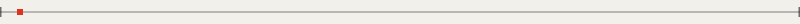
The section name types up between rules, caret keeps blinking. Would be cut once per section with its own label (§ THE ENGINES, § HOW IT WORKS…).
Header card for the engines section, above the comparison table. Both loop.
Stockfish thinks for real — lamp pulsing, depth ticking 3→13, a bar filling for its 500 ms — then plays. Maia's lamp blinks once (35 ms) and answers instantly. The joke is the point: same loop, two temperaments.
The site's live header scoreboard, replicated: two side-squares with the red to-move ring alternating, notation cycling through a Ruy Lopez. Quieter, thinner.
Replaces (or sits beside) the ASCII architecture diagram. Both loop.
Two red pulses travel the real request path — one from each screen, through getMoveFor, out to its engine, down into chess.js — offset so the two lanes take turns.
All wires run like belts, and the stages light up red in order: screens → contract → engines → the law. More diagrammatic, less literal.
Small enough to float right or sit centred at the very end of the README. Both loop.
The landing page's replay, in miniature: the first six plies loop, last-move square tracking in red.
The Opera Game's final position, still — only the mating square breathes red. The quietest option in the whole gallery.
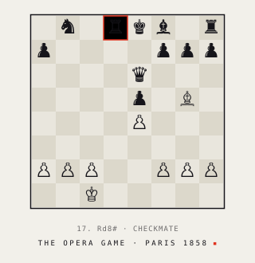